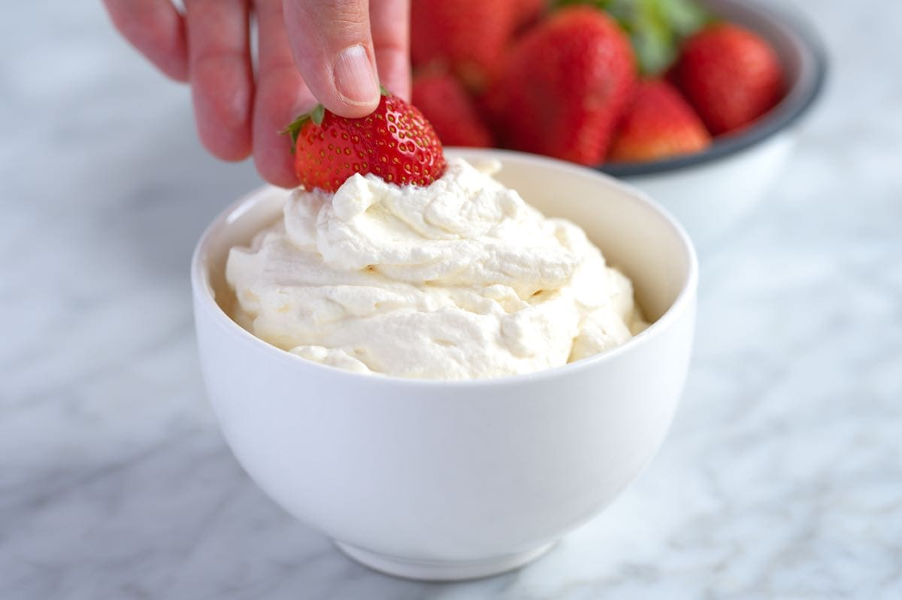
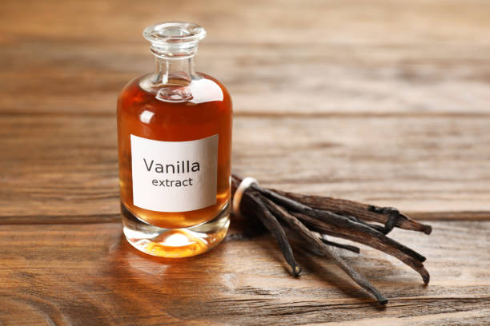
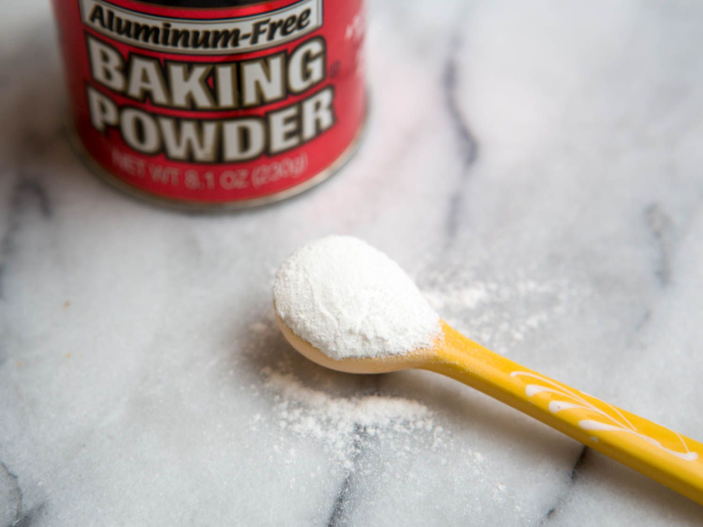

Cream Preparation
2 cups heavy cream

1/2 cup sugar
1 tsp vanilla extract
- Chill a mixing bowl in the freezer for 15 minutes.
- Pour heavy cream, sugar, and vanilla extract into the chilled bowl.
- Beat with an electric mixer until the cream forms stiff peaks.
- Refrigerate until ready to use.
Cake Preparation

2 cups all-purpose flour
1 cup sugar
1 tbsp baking powder

4 eggs

1/2 cup unsalted butter, melted
- Preheat oven to 350°F (175°C).
- Grease and flour two 9-inch round cake pans.
- In a large bowl, sift together flour, sugar, and baking powder.
- Add eggs and melted butter, mix until smooth.
- Divide batter evenly between prepared pans.
- Bake for 25-30 minutes or until a toothpick inserted into the center comes out clean.
- Allow cakes to cool completely before assembling.
Assembling the Cake

- Place one cake layer on a plate or cake stand.
- Spread a thick layer of cream over the cake.
- Top with the second cake layer.
- Spread the remaining cream over the top and sides of the cake.
- Garnish with fruit or chocolate shavings if desired.